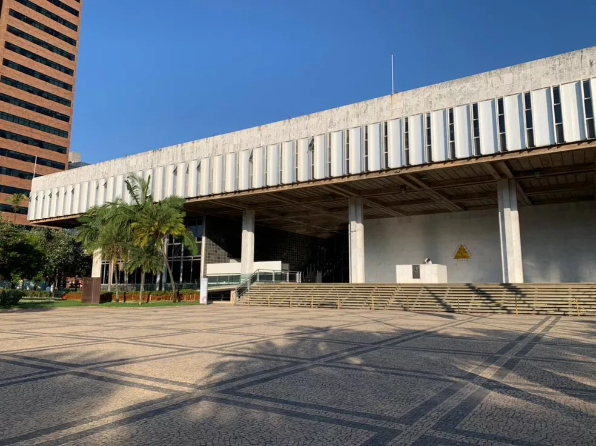

A Assembleia Legislativa de Minas Gerais (ALMG) aprovou um projeto
de lei que obriga o Estado a adotar medidas de prevenção de ataques em escolas.

A Lei 24.315, de 2023, sancionada pelo governador em exercício e
presidente da Assembleia Legislativa de Minas Gerais (ALMG),
Tadeu Martins Leite, estabelece medidas de controle para a defesa
civil e prevenção e mitigação dos efeitos de acidentes e atos violentos
nas escolas da rede público do ensino do Estado. A sanção foi publicada
no Diário Oficial de Minas Gerais em 9 de maio de 2023.
Essa lei teve origem no Projeto de Lei (PL) 993/19, proposta pelo deputado
Sargento Rodrigues (PL), e foi aprovada em 2º turno na Reunião Ordinária do
Plenário realizada em 12 de abril.
Os objetivos da nova lei, mencionados em seu segundo artigo, incluem:
Promover a capacitação e treinamento de alunos e profissionais da
educação em procedimentos de prevenção e emergência em casos de desastres,
acidentes e atos violentos.
Incentivar a criação de campanhas educativas sobre ações de defesa civil
e prevenção e mitigação dos efeitos de acidentes e atos violentos nas escolas
públicas do Estado.
Conscientizar os membros da comunidade escolar sobre a importância da
percepção de riscos e das formas de prevenção de desastres, acidentes e atos
violentos, tanto no ambiente escolar como no doméstico e em outros locais separados.
Fortalecer as ações preventivas de segurança contra desastres em escolas
situadas em áreas de risco.
Estimular a formação de brigadas de emergência e equipes de monitores para
auxílio especializado em situações de risco de desastres, acidentes e
atos violentos no ambiente escolar.
O terceiro artigo da Lei 24.315 estabelece as diretrizes dessas medidas, que incluem:
Desenvolvimento de metodologias de treinamento que incentivam a participação
dos alunos em procedimentos de prevenção e emergência diante de desastres,
acidentes e atos violentos nas escolas.
Divulgação de informações sobre ações de defesa civil e prevenção e mitigação
de efeitos de acidentes e atos violentos nas escolas.
Realização periódica de exercícios simulados para a aplicação prática
dos procedimentos aprendidos.
Busca de cooperação intersetorial com órgãos e entidades da administração pública,
entidades privadas sem fins lucrativos ou voluntários para aproveitar recursos
humanos privilegiados e otimizar os custos das atividades.
Garantia da continuidade e regularidade das atividades relacionadas à defesa civil,
prevenção e mitigação de acidentes e atos violentos nas escolas.
Articulação entre os sistemas municipal e estadual de ensino e a Coordenadoria
Estadual de Defesa Civil (Cedec-MG) na implementação das ações de defesa
civil no ambiente escolar.
Articulação entre os sistemas municipal e estadual de ensino, a Polícia Militar
e o Corpo de Bombeiros Militar na implementação